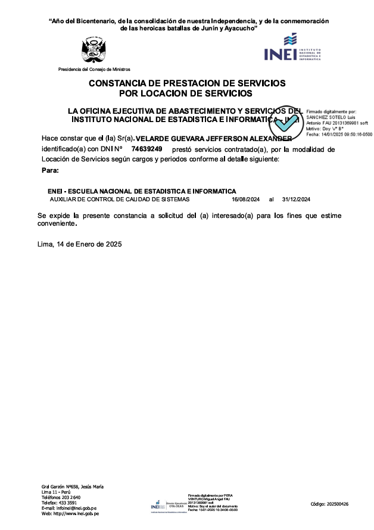
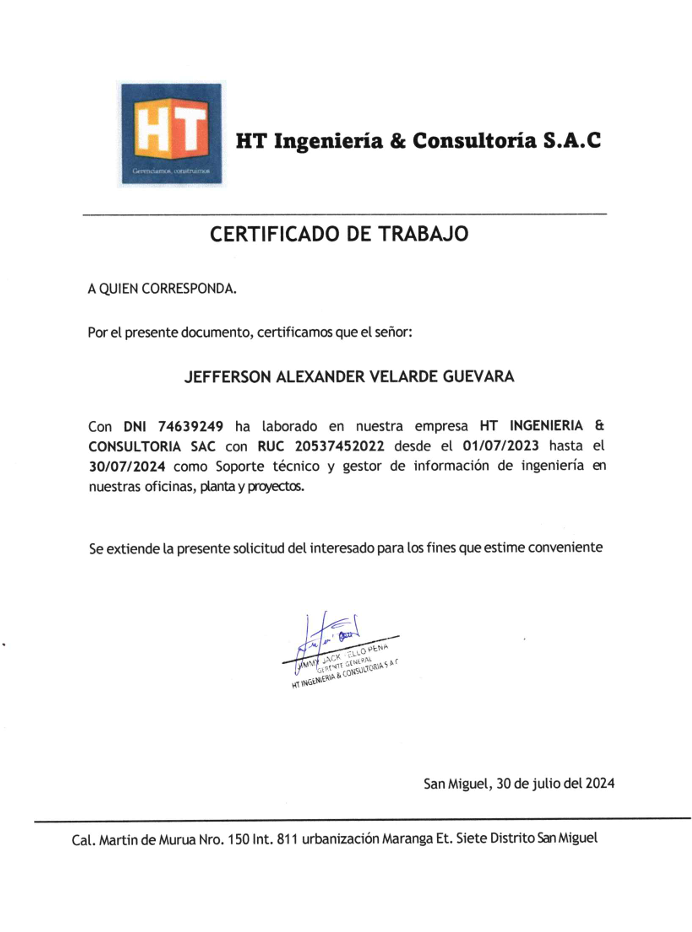
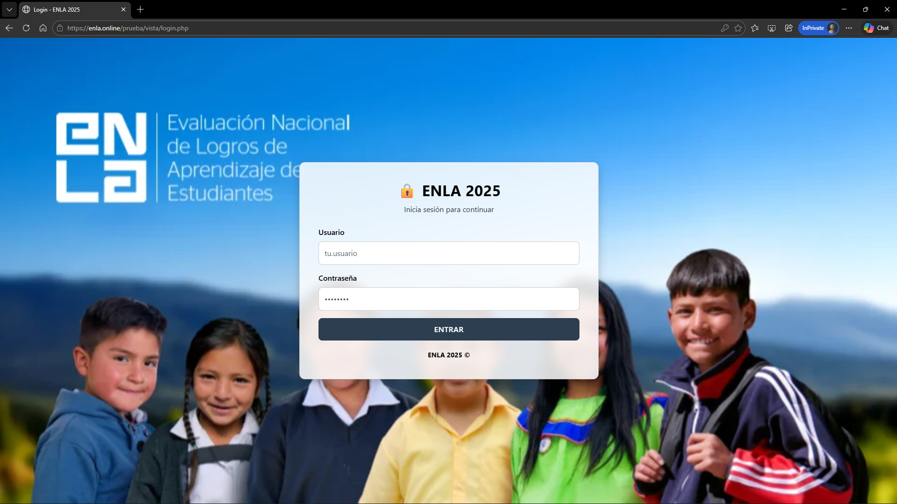
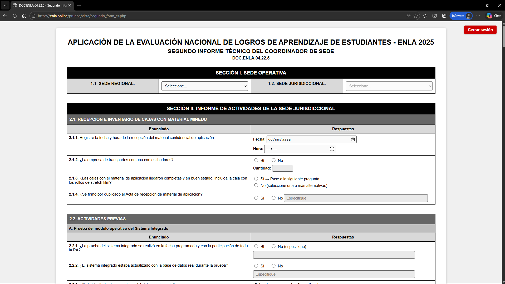
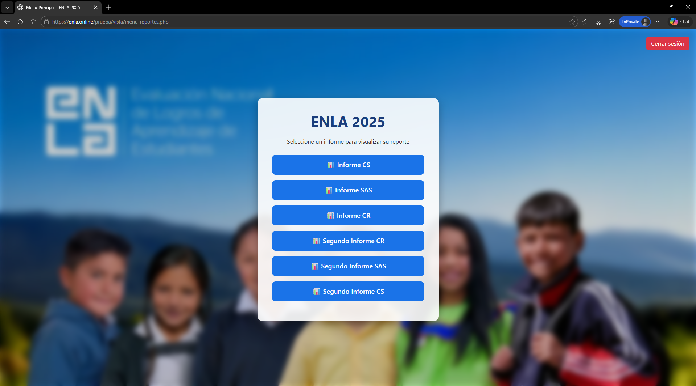
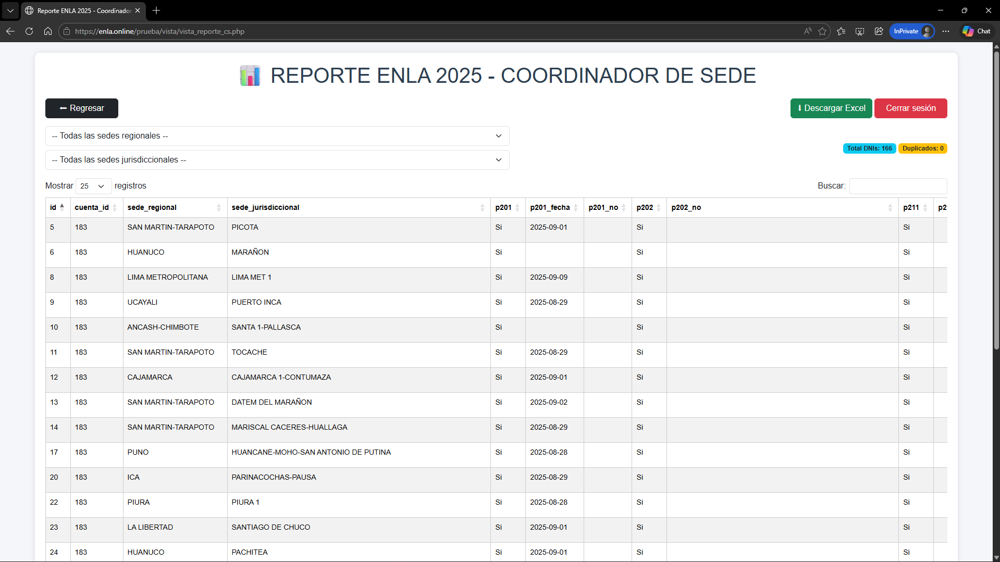
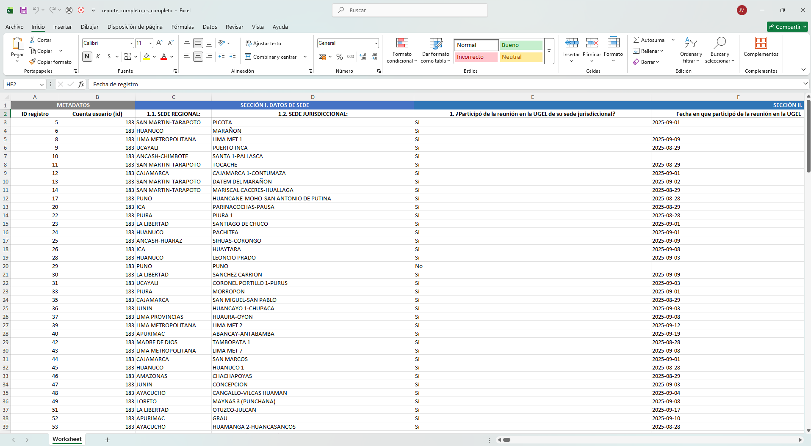

Jefferson Velarde
Desarrollador Web Junior y Base de Datos
Apasionado por gestionar base de datos y crear experiencias web funcionales.
Contacto
Experiencia Laboral
Auxiliar de control de calidad de Sistemas - Procesamiento de Datos
INEI - Instituto Nacional de Estadística e Informática
En este puesto de trabajo mi función es asegurar que los productos tecnológicos cumplan con los estándares establecidos mediante la ejecución y documentación de pruebas funcionales, de rendimiento y automatizadas. Además, colaborar en la gestión de versiones, verifica procesos de calidad, apoya auditorías y analiza métricas clave para proponer mejoras. También realice tareas de procesamiento de datos mediante un motor de base de datos y Excel, con la finalidad de recopilar, validar y análisar información relevante para evaluar el desempeño del sistemas integrado web y los APK, contribuyendo a la optimización continua de procesos y herramientas tecnológicas.
- MySQL
- SQL
- Excel
- Word
- Power BI
- Android Studio

Soporte técnico - Gestor de Información en Ingeniería
HT Ingeniería & Consultoría
Como Soporte Técnico - Gestor de Información en Ingeniería, me encargué del mantenimiento tanto software como hardware del equipo tecnologico de oficina. Apoye en la recopilacion de datos sobre el estudio en campo y elaboré informes detallados en Excel sobre dicho estudio, las incidencias presentadas y las soluciones aplicadas. Coordiné con el equipo técnico y otros departamentos para resolver problemas y asegurar la correcta ejecución del proyecto.
- Visio
- Excel
- Word
- Power BI

Soporte técnico - Gestor de Información en Ingeniería
INELCOM
Como Soporte Técnico - Gestor de Información en Ingeniería, me encargué del monitoreo y supervisión del equipo técnico en campo durante la instalación de equipos, asegurando que se siguieran los procedimientos establecidos y que los equipos fueran instalados correctamente. Validé la correcta instalación de los dispositivos, realizando pruebas de funcionamiento para garantizar que cumplieran con los estándares técnicos. Además, recopilé datos y elaboré informes detallados en Excel sobre el progreso de la instalación, incidencias y soluciones implementadas. Coordiné con el equipo técnico y otros departamentos para resolver problemas y asegurar la correcta ejecución del proyecto, garantizando que la instalación se completara a tiempo y sin contratiempos.
- SQL
- Visio
- Excel
- Word
- Power BI
Practicante Android Developer
CORARVI - Delivery center
Como asistente de operaciones junior, participé en el desarrollo y mejora de una aplicación móvil utilizando Android Studio, optimizando el código existente para mejorar su rendimiento y funcionalidad. Diseñé e implementé nuevas funcionalidades, conectando la app a Firebase para gestionar bases de datos no estructuradas y aprovechar servicios como autenticación y sincronización en tiempo real. Además, creé y administré la base de datos en Firebase, estableciendo reglas de seguridad para proteger la información. Documenté los procesos y trabajé en colaboración con el equipo de desarrollo para cumplir con los objetivos del proyecto de manera eficiente.
- Excel
- MySQL
- SQL
- Android Studio
- Firebase
- Java
- XML

Proyecto Personal

Web E-Commerce "BOOKSITE"
Aplicación web con Flask y MySQL para venta de libros digitales.
Proyecto Web Informes Tecnicos - ENLA 2025

Login
Incio de sesion solo para algunos cargos correspondientes del proyecto ENLA

Informe tenico del Coordinador de Sede
Dicho informe contiene condicionales de activacion y desactivacion de preguntas para su corrceto llenado y resduccion de errores al llenado, tambien cuenta con la subida archivos tipo pdf y condicionales de tipos de caracteres a ingresar determinado por la pregunta

Menu de Administracion
En esta pagina se puede ingresar a diferentes reportes del llenado de los informes tecnicos, solo puede ingresar el usuario administrador

Pagina reporte del Coordinador de Sede
En esta pagina se visualiza el reporte de un cargo, donde se aplica conteo de DNI duplicados, conteo de usuario y filtros por sede regional e jurisdiccional, botones de navegacion y boton para la descarga del reporte en excel

Reporte en Excel del Informe tecnico del Coordinador de Sede
Este es el archivo excel que se descarga de la web del reporte del informe tecnico del Coordinador de Sede, en este reporte se hizo la conversion del codigo de pregunta a la redaccion de la pregunta tal cual esta en la web del informe tecnico, esta conversion se realizo mediante codigo y se separo por secciones
Proyecto Gestión de Incidencias
Login
Incio de sesion solo para algunos cargos correspondientes del proyecto ENLA

Menu Principal
En este menu se puede acceder a diferentes vistas mediante botones, los cargos que tienen acceso al menu para la gestion de incidencias es el coordinador de Monitoreo informatico y los monitores informaticos, cuando se ingresa con el usuario de un monitor informatico se bloquea el boton reporte de incidencias y el boton administrar tipo de incidencias, ya que a estas paginas solo puede ingresar el coordinador de monitoreo informatico

Registro de incidencias informaticas
En esta pagina se visualiza una tabla con el total de ticket de incidencias realizadas por los cargos de campo por cada sede regional, tambien la cantidad de tickets de incidencias abiertas, ademas de que el monitor informatico puede genera un ticket de sus sedes regionales a cargo, esta pagina tambien notifica a la cuenta del monitor informatico a cargo de la sede regional a la que se le registro nuevo ticket mediante una alerta emergente

Listado de incidencias informaticas
En esta pagina se visualiza una tabla con el total de ticket de incidencias realizadas por los cargos de campo por cada sede regional, tambien la cantidad de tickets de incidencias abiertas, ademas de que el monitor informatico puede genera un ticket de sus sedes regionales a cargo, esta pagina tambien notifica a la cuenta del monitor informatico a cargo de la sede regional a la que se le registro nuevo ticket mediante una alerta emergente

Gestion de tipos de incidencias informaticas
En esta pagina el coordinador del monitoreo informatico gestiona los tipos de incidencias mas comunes reportados por campo

Menu ticket de incidencia
En esta pagina el persona de campo puede acceder a las paginas de historial de ticket realizados o Generar un ticket

Generacion de tickets de mesa de ayuda
En esta pagina el persona de campo genera ticket de incidencias, la web tiene autocompletado en la informacion de la fecha, sede regional, sede jurisdiccional, responsable, monitor informatico asignado